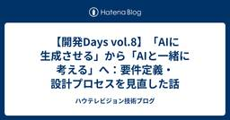

ハウテレビジョン技術ブログ
https://blog.howtelevision.co.jp/
『外資就活ドットコム』『外資就活ネクスト』『mond』を開発している株式会社ハウテレビジョンの技術ブログです。
フィード
AIを活用したエラー対応効率化【開発Days vol.7】
ハウテレビジョン技術ブログ
複数のプロダクトを横断的にインフラや開発環境の改善などプラットフォームエンジニアリングをしている Product Engineering チームです。 今回はシステム品質向上の一環として、直近の開発 Days でエラー対応の効率化に取り組みました。より技術的な詳細は別途こちらに公開しているので、よろしければそちらもご参照ください。 課題 社内では複数の Web サービスを運用しており、エラー監視は前回の開発 Days で Datadog Error Tracking に集約しました (参考エントリ)。おかげで本番のエラーは迅速に検知できています。 ただ、検知後の対応は人間頼みのままでした。通知…
14時間前

【開発Days vol.8】「AIに生成させる」から「AIと一緒に考える」へ：要件定義・設計プロセスを見直した話
ハウテレビジョン技術ブログ
外資就活ネクストの開発チームです。弊社ではClaude Codeを使った開発プロセスの整備を進めています。今回は、機能開発における要件定義〜設計フェーズで、AIの役割を「生成者」から「コーチ」へと転換した取り組みを紹介します。 背景: AIが「いい感じに生成」しすぎる問題 これまで弊社では、機能設計を支援するAIの仕組みを運用していました。PdMの要望を渡すと、要件から設計書まで一気通貫でAIが自動生成してくれる便利なものです。 ただ運用するうちに、次のような問題が見えてきました。 設計書は一瞬で出てくるが、実装担当者がその設計を十分に理解しないまま実装に入ってしまう とくにジュニアメンバーに…
7日前

履歴書のテキストから「相性のいい転職エージェント」を提案する：LLM × Embeddingレコメンドエンジンの設計と運用
ハウテレビジョン技術ブログ
外資就活ネクストの開発チームです。今回は、候補者のプロフィールをもとに相性のよい転職エージェント（以下 AGT）を提案する新機能「トップエージェント厳選レコメンド」をリリースしました。AIを活用して候補者と相性のよいAGTを数名に絞り込み、「なぜこのAGTがあなたに合うのか」という推薦理由まで自動生成する仕組みです。 この記事では、機能全体の設計の考え方と、開発を通じて得られた学びを紹介します。 背景: 「たくさんのAGTから自分に合う人を選ぶ」のは難しい 弊社サービスには多数の転職エージェントが登録しています。しかし候補者からすると、得意領域・過去の実績・利用者のクチコミといった情報を一人ず…
25日前
【開発Days vol.7】リリースして終わりにしない。事業KPI・エラー・メール配信を可視化した取り組み
ハウテレビジョン技術ブログ
外資就活ネクストの開発チームです。 プロダクト開発では、新しい機能をリリースすること自体が目的になってしまうと、その機能がユーザーや事業にどのような変化をもたらしたのかを十分に振り返れません。また、利用が広がる一方でエラーが発生していないか、ユーザーとの接点であるメールが実際に読まれているかといった点も、継続的な改善には欠かせない情報です。 そこで今回は、リリース後の変化を開発チーム自身が確認し、次の改善につなげるために整備した3つのダッシュボードについてご紹介します。 背景: リリース後の状況をすぐに確認できるようにしたい 取り組んだこと 1. 機能リリースと事業KPIを結びつけるダッシュボ…
1ヶ月前
【開発Days vol.6】エラー監視基盤を統合し、可観測性を強化
ハウテレビジョン技術ブログ
外資就活ドットコム・外資就活ネクストの、インフラや開発環境の改善などプラットフォームエンジニアリングをしている Product Engineering チームです。 プロダクトの成長とともに、監視・観測基盤は避けられないテーマのひとつです。今回は、エラー通知ツールを BugSnag から Datadog へ移行し、可観測性の一元化に取り組みました。 背景と課題 ハウテレビジョンのプロダクトでは、これまで監視用の SaaS として Datadog と BugSnag を併用していました。この構成には歴史的な経緯によるところが大きいのですが、以下のような課題が顕在化してきました。 ツールの分散によ…
4ヶ月前
【移転しました】六本木ヒルズ 森タワー新オフィスを紹介します！
ハウテレビジョン技術ブログ
はじめまして！今年からハウテレビジョンでインターンをしている大城です！普段はエンジニアとして日々研鑽しています！ ハウテレビジョンは2026年2月からオフィスが六本木ヒルズ28階に移転しました！🎉 ▼ハウテレビジョン、六本木ヒルズ森タワーに本社を移転 https://howtelevision.co.jp/news/post-146/ 今回は、新しくなったオフィスの魅力をご紹介します！まずは、オフィス内を写真で紹介します。 オフィスエントランス mondのにゃんどがお出迎え 移転のお祝いに、とても素敵なお花をいただきました 新たに配信スタジオが完成！最新の機器が揃っています 以前は3部屋だった…
5ヶ月前
【開発Days vol.5】モバイルアプリへのDatadog RUM導入
ハウテレビジョン技術ブログ
外資就活ネクストの開発チームです。 開発チームの新たな取り組み "開発Days"とはで紹介されたように、弊社では毎月連続した2日間、通常のプロダクト開発から一時的に離れ、技術的な課題に集中的に取り組む仕組みがあります。 今回は、その開発Days vol.5で取り組んだ「モバイルアプリへのDatadog RUM導入」についてご紹介します。 背景: ユーザーの端末で実際に何が起きているかを知りたい やったこと Datadog RUMの導入 console.logの自動転送 パフォーマンス指標の計測 環境分離 ハマったこと expo-datadogのドキュメントの型エラー EAS Buildのfin…
5ヶ月前
【開発Days vol.5】求人詳細Next.js移植
ハウテレビジョン技術ブログ
外資就活ネクストの開発チームです。 開発チームの新たな取り組み "開発Days"とはで紹介されたように、弊社では毎月連続した2日間、通常のプロダクト開発から一時的に離れ、技術的な課題に集中的に取り組む仕組みがあります。 今回は、その開発Days vol.5で取り組んだ「求人詳細ページのNuxt.jsからNext.jsへの移植」についてご紹介します。 背景: フレームワークをまたぐ遷移のローディング問題 SPA遷移ではなくフルページリロードになる 別フレームワークのJSバンドル全体を再ダウンロード Hydration（初期化処理）のやり直し やったこと: 求人詳細ページをNext.jsに移植 コ…
5ヶ月前
【開発Days vol.5】スカウト一括送信のパフォーマンス改善
ハウテレビジョン技術ブログ
外資就活ネクストの開発チームです。 開発チームの新たな取り組み "開発Days"とはで紹介されたように、弊社では毎月連続した2日間、通常のプロダクト開発から一時的に離れ、技術的な課題に集中的に取り組む仕組みがあります。 今回は、その開発Days vol.5で取り組んだ「スカウト一括送信のパフォーマンス改善」についてご紹介します。 背景: スカウト一括送信がタイムアウトする 問題の原因: ループ処理によるDBクエリの爆発 やったこと 1. ループ処理 → バルクINSERTへの書き換え 2. メール・ジョブのバルクエンキュー 3. エラーハンドリングの改善 ハマったこと insert_all が…
5ヶ月前
膨大な体験記から最適な対策を自動提案する：LLMを活用した新機能「就活コパイロット」をリリースしました
ハウテレビジョン技術ブログ
外資就活ドットコム開発チームです。 先日、AIが選考管理や対策をサポートする新機能「就活コパイロット」をリリースしました。 就活コパイロット ■機能ページ https://gaishishukatsu.com/mypage/entry_managements/progress (会員限定機能です) ■プレスリリース 外資就活ドットコム、AI新機能の統合管理ツール「就活コパイロット」を提供開始 https://prtimes.jp/main/html/rd/p/000000145.000026700.html ■ 新機能「就活コパイロット」の概要 本機能は、AIがユーザーの選考フェーズに合わせて…
5ヶ月前
【メンバー紹介②】ハウテレビジョンの開発を支える5Valuesとは
ハウテレビジョン技術ブログ
ハウテレビジョンの開発メンバー紹介第2弾！ まだまだ成長途中のハウテレビジョン。 何故そういった会社に入社したのか。ハウテレビジョンの開発はどういったものなのか。 メンバーの声をまとめてみました！ 第1回はこちら↓ howtv.hatenablog.com ①Mさんの場合 医療事務として3年ほど勤務。 業務で使用していた保険請求システムの使用感を改善していたのがきっかけでIT業界へ転職。 ドメイン駆動設計での開発を深めたいと思い、前職のjustInCaseに転職。 ハウテレビジョンへ転職。 もともと情報系の大学で、コンピューターサイエンスなどを学んでいたというMさん。前職では顧客との距離が遠か…
5ヶ月前
【メンバー紹介①】プログラミングスクール出身で本当にスクラムマスターになれた環境とは
ハウテレビジョン技術ブログ
本日から2回にわたって、ハウテレビジョンの開発メンバーをご紹介したいと思います！ まだまだ成長途中のハウテレビジョン。 何故そういった会社に入社したのか。ハウテレビジョンの開発はどういったものなのか。 メンバーの声をまとめてみました！ ①Fさんの場合 新卒で商社の営業職に従事。 その後、プログラミングスクールを経てエンジニアに転身。 2019年にハウテレビジョン入社。 現在は開発部長としてキャリアプラットフォーム事業のすべてを管轄。 ~2019：外資就活の開発メンバー ~2021：ToB向け開発チームリーダー ~2025：外資就活側開発リーダー・EM・スクラムマスターなど 2025年6月~：開…
6ヶ月前
【開発Days vol.4】AWS セキュリティ新機能調査
ハウテレビジョン技術ブログ
外資就活ドットコム・外資就活ネクストの、インフラや開発環境の改善などプラットフォームエンジニアリングをしている Product Engineering チームです。 前回の開発 Days ではセキュリティの棚卸しをおこないました。 howtv.hatenablog.com その後、重要度の高いものから以下のような 15 件ほどの対応をおこないました。 不要な IAM ユーザー、ロールの削除、または権限の最小化 認証情報の保存方法の見直し 不要なポート公開の削除 脆弱なプロトコルの廃止 ランタイムの最新化 開発環境へのアクセス制御の見直し 通知の強化 今後も継続的に監視、改善を進めていくにあたり…
6ヶ月前
【開発Days vol.4】ページデザイン変更とEASの導入
ハウテレビジョン技術ブログ
株式会社ハウテレビジョンの開発チームです。 開発チームの新たな取り組み "開発Days"とはで紹介されたように、弊社では毎月連続した2日間、通常のプロダクト開発から一時的に離れ、技術的な課題に集中的に取り組む仕組みがあります。 今回は、その開発Days vol.4で実際に取り組んだことについてご紹介します。 デザイン変更とmagic podの罠 外資就活ネクストを担当しているチームは、バッチ処理の改善による、jobサーバーのメモリ使用率の安定と、外資就活ネクストのトップページのデザイン変更を行いました。 暗い青をプライマリーカラーとした無難なデザインから、明るい青を用いたスタイリッシュで見やす…
6ヶ月前
How Lab. 第8回開催レポート - 忘年会LT2025
ハウテレビジョン技術ブログ
はじめに 新年あけましておめでとうございます。 今年もハウテレビジョンをよろしくお願いいたします。 午年！ということで、馬力十二分に飛躍の年にすべく、ブログも更新していきたいと思います。 howtv.hatenablog.com 前回の開催レポートに引き続き、今月も社内勉強会 How Lab の開催レポートをまとめていきます。 ハウテレビジョンでは社内技術共有イベント How Lab. を定期的に開催しています。参加者は開発メンバーを中心に、最新技術の理解と実践に取り組んでいます。 今回は忘年会LT版ということで、技術に限らず、様々な観点から今年を振り返り、発表していただきました。普段は技術に…
7ヶ月前
【2025 Advent Calendar 最終日】Make it Happen. 成果を出すメンバーが持っていた共通項
ハウテレビジョン技術ブログ
はじめに Merry Christmas! ハウテレビジョン Advent Calendar 2025 の最終日を担当します、執行役員の長﨑（@takafumi_ngsk）です。プロダクト開発/マーケティング部門の統括、新規事業の担当をしています。 24日間、エンジニアをはじめ皆さんが、技術的な知見や日々の奮闘を綴ってくれました。どれも素晴らしい内容で、バトンを受け取るのに緊張しています。 私はエンジニアではないので、コードの話ではなく、このカレンダーの締めくくりとして、技術や役割を超えた「事業を作る私たち全員の共通項」について書きたいと思います。 2025年、私たちは何に挑んだか 今年はキャ…
7ヶ月前
【2025 Advent Calendar 24日目】激動のコーポレート2025総集編
ハウテレビジョン技術ブログ
この記事は HowTelevision Advent Calendar 2025、24日目の記事です。 25日まで連続投稿します。 qiita.com はじめに 2025年も残すところあと3営業日！ コーポレート部門を担当している、 @simisin です。 師走の足音が聞こえてくる時節ですが、例年に増して盛り沢山で、毎月のように何かしらしていた株式会社ハウテレビジョンのコーポレートイベントを総集編で振り返ってみましょう。 2025年1月 * 1月6日 Liigaを本体に再吸収（会社分割） [press] 中途採用プラットフォーム（現・外資就活ネクスト）が、子会社から親会社に事業譲渡で戻ってく…
7ヶ月前
pmconf登壇のあとがき：泣く泣くカットした「共創型開発チーム」への「改革の裏側」【2025 Advent Calendar 23日目】
ハウテレビジョン技術ブログ
pmconf2025登壇のあとがき：泣く泣くカットした「共創型開発チーム」への「改革の裏側」
7ヶ月前
【2025 Advent Calendar 22日目】リスペクト・謙虚・リーダーシップ
ハウテレビジョン技術ブログ
この記事は HowTelevision Advent Calendar 2025 22日目の記事です。 こんにちは、mond で開発チームのリーダー・UI デザイン・仕様検討などなどやっている shiba です。 mond 開発チームにジョインして 1 年と数カ月が経過しました。 この間自分はコードを直接書くことはほとんど無く、チームのリーダー的ポジションとしてタスクやスケジュールの調整をしたり、今後作りたい機能のために法務や経理の方と決めるべきことを決めて進める役割を担ったりしていました。 直接的なエンジニアリングは個人開発くらいなので、今回は様々な人や組織に関わるうえで気をつけていることに…
7ヶ月前
【2025 Advent Calendar 21日目】 なぜ戦略コンサルからスタートアップの経営に参画したのか？ 新たな挑戦の242日間（と今後）
ハウテレビジョン技術ブログ
この記事は HowTelevision Advent Calendar 2025 21日目の記事です。25日まで連続投稿します。 はじめに こんにちは。ハウテレビジョンで上級執行役員COOを務めております、中脇です。 今年の4月末に当社に参画してから、早いもので8ヶ月が経とうとしています。今回、アドベントカレンダーという素敵な機会をいただいたので何を書こうか迷いましたが、この8ヶ月間で公私問わず、それこそリアルに100回以上は聞かれたであろう「あの問い」について筆を執ることにしました。 「なぜ、戦略コンサルから今のタイミングでスタートアップへ移ったのか？」 当社の5 Valueの一つである"C…
7ヶ月前
【2025 Advent Calendar 20日目】EMからPdMになってみて
ハウテレビジョン技術ブログ
この記事は HowTelevision Advent Calendar 2025 20日目の記事です。25日まで連続投稿します。 https://qiita.com/advent-calendar/2025/howtv こんにちは。外資就活ネクストでPdMをしている大平です。 今回は、新卒入社後2年半エンジニアとしてキャリアを歩んできた私が、PdM領域に「ガッツリ」踏み込んでみて感じた、葛藤や気づきについてお話ししたいと思います。 これまでの歩み：エンジニア業務について 私は元々「外資就活ドットコム」のエンジニアとして入社し、主に技術負債の解消という数年規模のプロジェクトのマネジメントを8ヶ月…
7ヶ月前
【2025 Advent Calendar 19日目】新サービスの管理画面をAIに助けてもらった話
ハウテレビジョン技術ブログ
この記事は HowTelevision Advent Calendar 2025、19日目の記事です。 25日まで連続投稿します。 qiita.com はじめに こんにちは。ハウテレビジョン開発部の山本です。 Advent Calendar 19日目は「エンジニア2人+デザイナー1人」の仕事を1人で。新サービスの管理画面をClaude Codeに助けてもらった話です。 新サービスを立ち上げる際、どうしても後回しにされがちなのが「管理画面（Admin Panel）」です。 今回、私も新サービスの立ち上げに参加したのですが、エンジニア・デザイナーのほとんどをユーザー向け機能（ToC）に集中させたた…
7ヶ月前
【2025 Advent Calendar 18日目】Hono + Drizzle ORMによるバックエンド開発
ハウテレビジョン技術ブログ
この記事は HowTelevision Advent Calendar 2025 18日目の記事です。25日まで連続投稿します。 https://qiita.com/advent-calendar/2025/howtv ソフトウェアエンジニアの根本です。 今回は、Hono + Drizzle ORMを使ったバックエンド開発の技術選定のチャレンジについて紹介します。モダンなTypeScriptバックエンド開発において、この組み合わせがいかに強力かを実際の開発経験を交えて解説していきます。 技術スタックの概要 Hono は、Cloudflare Workers、Deno、Bun、Node.js、A…
7ヶ月前
【2025 Advent Calendar 17日目】今年のインフラエンジニアリング
ハウテレビジョン技術ブログ
この記事は HowTelevision Advent Calendar 2025 17日目の記事です。25日まで連続投稿します。 qiita.com プロダクトを横断してクラウドインフラから開発環境の整備といった、プラットフォームエンジニアリング的な改善をおこなっています。Product Engineering チームの広瀬です。入社して 2 年が経ちました。早いものです。 私のほうからは「今年のOwnership」というテーマで、今年の成果について振り返ってみたいと思います。今年は主にサービスインフラの一層の安定化、健全化といった観点で進めてきました。機能開発のように目を引く話ではありません…
7ヶ月前
【2025 Advent Calendar 16日目】Netflixでアカウントを乗っ取られた話
ハウテレビジョン技術ブログ
この記事は HowTelevision Advent Calendar 2025、16日目の記事です。 25日まで連続投稿します。 qiita.com はじめに はじめまして。「外資就活ネクスト」「外資就活ドットコム」でマーケティングを担当しているcr0000です。 私は昨年、新卒入社時から「外資就活ドットコム」でマーケティングに携わってきましたが、今年の夏からは「外資就活ネクスト」でもマーケティングを兼務させていただくことになりました。 転職市場でのマーケティングは、新卒市場とはまた違った難しさがあります。 それと同時に、自身の成長や至らなさを実感する場面も多く、振り返ると学びが多い下半期だ…
7ヶ月前
【2025 Advent Calendar 15日目】mond お題募集のDB設計で考えたこと
ハウテレビジョン技術ブログ
HowTelevision Advent Calendar 2025 15日目の記事です バンド活動が落ち着いて新しいことに挑戦すべく、大学数学を学ぶため高校数学を勉強している @imaharuTech です 入門問題精講という神参考書に日々感謝しています 本記事は、mond で開発した「お題募集」のDB設計について紹介します 概要 mondは、Q&Aサービスです お題付きリンクをSNSシェアしたいという要望が上がりました 業務フローは以下の通りです お題投稿者が「お題付きリンクコピー」ボタンを押下 「SNSシェア」ボタンを押下 SNS投稿に1でコピーしたリンクを貼り付け 投稿閲覧者がリンクを…
7ヶ月前
【2025 Advent Calendar 14日目】なぜ職務経歴書自動インポートが必要だったのか
ハウテレビジョン技術ブログ
この記事は HowTelevision Advent Calendar 2025、14日目の記事です。 25日まで連続投稿します。 qiita.com こんにちは。中途転職サービス「外資就活ネクスト」の事業部の武藤です。 本記事は、11日目に公開された 木元さんの記事と連動した内容 になっています。 木元さんの記事では、 「職務経歴書PDF自動インポート機能をどのように技術的に実装したのか」 が詳しく紹介されています。 一方、この記事では、 なぜ私たちがこの機能を“今”つくる必要があると判断したのか。 どんな事業課題とユーザー課題を背景に開発を決めたのか。 その“理由の部分”についてお話しした…
7ヶ月前
【2025 Advent Calendar 13日目】元コンサル・マーケ担当が、エンジニア用語も分からない状態でPdMになって気づいたこと
ハウテレビジョン技術ブログ
はじめに こんにちは。ハウテレビジョン企画室の比嘉です。 今年は私にとって激動の1年でした。 タイトル通り、年内でマーケティング担当からPdM/PM寄りになり、働き方や関わる人がガラリと変わりました。 キャリアとしては、コンサル→BtoBマーケ→PdM/PMと変遷しており、いろいろな経験をさせてもらっていることに感謝です。 特に今年は、学生エンジニア含め開発チームとガッツリ関わった1年でした。 今回は、エンジニアリングの知見がない中でPdMにチャレンジし、壁にぶつかりながら気づいたことを共有します。 今年やったこと 協会とのイベント企画 ハッカソン運営・企業誘致 中長期戦略策定 プロダクト設計…
7ヶ月前
【2025 Advent Calendar 12日目】Vibe Codingでバックエンド開発を楽しむ
ハウテレビジョン技術ブログ
この記事は HowTelevision Advent Calendar 2025、12日目の記事です。 25日まで連続投稿します。 qiita.com こんにちは！新規開発チームバックエンド担当の高です。 5Values中の「Challenge」──今年のテーマにふさわしく、バックエンド開発も大きな変化の波を迎えています。その中心にあるのが、AIと対話しながらコードを書く「Vibe Coding」と思います。 はじめに：Vibe Codingとは 「Vibe Coding」とは、AIツールと対話しながら直感的にコードを生成していく新しい開発スタイルです。従来の「一行一行自分で書く」から、「AI…
7ヶ月前
【2025 Advent Calendar 11日目】Google Vision × Bedrockで作る！職務経歴書PDFの自動インポート機能
ハウテレビジョン技術ブログ
この記事は Howtelevision Advent Calendar 2025 の11日目の記事です。 こんにちは！25新卒で入社した木元です。 今年の5Valuesがテーマということで、私が入社して最初にOwnershipを持ってリリースした「職務経歴書PDF自動インポート機能」について紹介したいと思います。 私が所属しているチームでは、中途転職サービスの外資就活ネクストを運営しています。 転職サービスを利用したことがある方なら、一度は「職務経歴の入力が面倒」だと感じたことがあるのではないでしょうか。特に複数のサービスを併用している場合、そのすべてを最新の状態に維持し続けるのは非常に困難で…
7ヶ月前